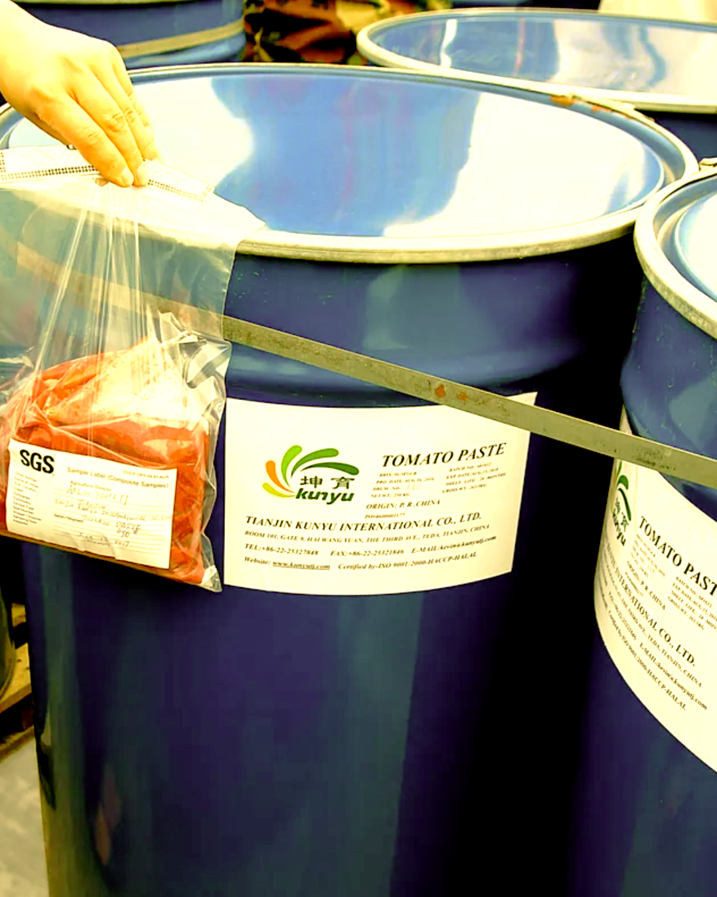
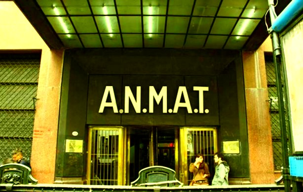

La alimentación no puede ser entendida fuera de las contradicciones del sistema capitalista, que utiliza el hambre y el acceso diferencial a los alimentos como arma de exterminio social de la clase trabajadora (Guerra y Carnut, 2021). Los alimentos que consumimos son mucho más que una fuente de sustento o un objeto de intercambio comercial. Detrás de cada producto que llega a nuestra mesa existe un complejo entramado de regulaciones sanitarias, decisiones políticas y luchas entre poderes económicos.
Las regulaciones sobre los alimentos, no surgieron de una preocupación altruista por la salud pública, sino como un instrumento al servicio del estado liberal del siglo XIX, cuya prioridad era el ordenamiento del comercio exterior y la recaudación de impuestos (Marichal, 2016). Argentina fue pionera en la región, en la implementación de herramientas técnicas para el control de alimentos, y junto con la sanción de la Ley de Policía Sanitaria Animal (sancionada en 1900), se construyeron los primeros laboratorios bromatológicos del continente. Ésta ley se inscribía en una lógica de defensa del ganado como mercancía, y buscaba facilitar su tránsito comercial. Con el correr de las décadas, comenzó a gestarse una visión más sanitarista para la cuál los alimentos se encontraban vinculados a la salud pública. Esta mirada encontró su primer gran hito en 1928, cuando la provincia de Buenos Aires dictó el primer Reglamento Bromatológico del país. Le siguió en 1932 la provincia de Santa Fe, que sancionó su propio Código Bromatológico (Ley 2.998). En 1940, Santa Fe dio otro paso clave al crear el primer Instituto Bromatológico Provincial.

Para la década del cincuenta cada provincia tenía su propio código alimentario, lo que generaba un mosaico normativo fragmentado, produciendo en la práctica serios obstáculos para el tránsito y comercialización federal de alimentos. Es por ello que las cámaras empresarias impulsan un proceso de unificación normativa, que culmina con la creación del Código Alimentario Argentino en 1969. La dictadura militar de Onganía, al amparo del Estatuto de 1966, ejerció facultades legislativas sin intervención del Congreso y sancionó la ley 18.284, cuyo anexo I es la implementación del código alimentario nacional. Queda claro que esta unificación, lejos de ser un logro democrático, fue una imposición vertical que consolidó el poder de los expertos bromatólogos y de la gran industria alimentaria, marginando la participación popular (Marichal, 2016).
El concepto de seguridad alimentaria fue adquiriendo diferentes acepciones hasta llegar a la definición multidimensional actual (Federik y Laguzzi, 2019). Se fué incorporando el derecho a una alimentación adecuada en la legislación de muchos países, entre ellos Argentina, dónde se materializa como derecho fundamental en la constitución del 94 (artículo 42). Sin embargo, la participación de la sociedad en su conjunto en los procesos de toma de decisiones sobre los alimentos y su producción, se ha mantenido marginal, perpetuando estas normativas como un instrumento más de control del capital que en una verdadera herramienta ciudadana de autodefensa.
El Código Alimentario Argentino no sólo unificó criterios, sino que estableció un principio rector sanitario. La ley que reglamenta el CAA es una ley positiva, lo que significa que todo lo que no está expresamente permitido en el Código está prohibido, y cualquier alimento, aditivo o proceso nuevo debe ser evaluado y autorizado explícitamente antes de poder comercializarse. Para gestionar esta actualización, se crea la Comisión Nacional de Alimentos (CONAL) mediante el Decreto 815 de 1999. Este organismo técnico, era integrado por representantes de todas las provincias, del SENASA y del Ministerio de Salud. La CONAL tenía la función de asesorar y proponer las actualizaciones del Código. Durante más de dos décadas, este sistema permitió que la regulación alimentaria se mantuviera actualizada con criterios científicos y sanitarios. Un aspecto que vale la pena destacar sobre el Decreto N° 815/1999 es que establecía que los proyectos de reglamentos técnicos debían someterse a consulta pública, un mecanismo que permitía la participación ciudadana- aunque limitada sólo con voz- en los proyectos de modificación del Código.
Algunas experiencias históricas de ello, tuvieron impacto directo sobre la integridad física de las personas. El caso más emblemático de la era menemista fue la adulteración de los vinos de la bodega Torraga S.A. en 1993. El bodeguero Mario Torraga, dueño de la bodega Nietos de Gonzalo Torraga S.A., mezcló sus vinos económicos de las marcas "Soy Cuyano" y "Mansero" con metanol para abaratar costos, una sustancia altamente tóxica no apta para consumo humano. La intoxicación causó 29 muertes en todo el país y dejó a decenas de personas con secuelas permanentes como ceguera, trastornos neurológicos y daños renales. Uno de los episodios más trágicos ocurrió en Ensenada, donde murieron seis integrantes de una misma familia.
El capitalismo mata también por la boca

En la década de 1990, durante la gestión de Domingo Cavallo como funcionario del gobierno de Carlos Menem, se intentó una desregulación profunda del comercio de alimentos. Un proceso en el que también participó un joven economista llamado Federico Sturzenegger, quien se desempeñara en ese momento como Secretario de Política Económica. En, el decreto 2092/91 eliminó los frenos a las importaciones y reconoció a todos los países de "igual estatus sanitario", lo que en la práctica equiparaba a naciones con sistemas de control bromatológico de alimentos, con otras que apenas tenían una adhesión formal al Codex Alimentarius. El descontrol fue tal que ese mismo año se modifica el decreto con otro decreto (1812/1992) con el fin de agregar una cláusula que reducía el listado de países considerados de “igual estatus sanitario”, y finalmente, en 1992 se introdujo el criterio de reciprocidad para intentar poner algún freno. Sin embargo, el daño ya estaba hecho: en esos años se registraron múltiples intoxicaciones alimentarias, desde vinos adulterados hasta productos importados sin trazabilidad.
Tres décadas después, la historia se repite con mayor intensidad. En apenas dieciocho meses, una serie de decretos del gobierno de Javier Milei, ahora con Sturzenegger como ministro de Desregulación, transformó radicalmente el sistema de control alimentario:
- Decreto 35/2025 (enero de 2025): eliminó la obligación de registrar y autorizar muestras, productos, establecimientos y envases para productos importados. Estableció que los alimentos con certificación de países de "alta vigilancia sanitaria", o con tratados de integración económica o acuerdos de reciprocidad, podían ingresar al país mediante una simple declaración jurada, sin necesidad de estar previamente incorporados al Código Alimentario Argentino. La certificación puede ser un "certificado de libre venta" o un "documento análogo", lo que abre la puerta a que incluso un control interno de la propia empresa importadora sea suficiente.
- Decreto 538/2025 (agosto de 2025): dispuso la disolución de la CONAL, transfiriendo sus funciones a la ANMAT y al SENASA. Las provincias quedaron sin representación en la actualización del Código Alimentario. El argumento oficial fue "reducir demoras de hasta 4 años", pero el costo fue eliminar el único espacio de participación federal y técnica en la regulación de los alimentos.
- Decreto 697/2026 (agosto de 2026): dio el golpe definitivo al disolver el Instituto Nacional de Alimentos (INAL) y transferir todas sus funciones de registro, control y fiscalización de alimentos al SENASA. El SENASA depende de la Secretaría de Agricultura, que a su vez forma parte del Ministerio de Economía. Todos los alimentos, no solo los de origen animal, su manipulación y envasado quedan bajo la órbita de este organismo cuya misión histórica fue facilitar el comercio agropecuario. El Ministerio de Salud quedó reducido a una mera "rectoría sanitaria" sin poder de control efectivo. El decreto además unificó los controles en el SENASA, creando un único registro nacional de productos y establecimientos, una sola base de datos y una única ventanilla para realizar trámites. Acortó los plazos administrativos a 45 días hábiles para la actualización del Código Alimentario y estableció que los carnets de manipulación de alimentos pasan a tener validez permanente, eliminando la obligación de renovarlos periódicamente. La ANMAT dejó de intervenir en trámites vinculados con alimentos. Pero el impacto no es solo institucional. Al transferir al SENASA las funciones de registro que antes estaban a cargo del INAL, el Ministerio de Salud deja de percibir los aranceles por esos registros, una fuente de ingresos a una caja ya acotada por el ajuste del gobierno de Javier Milei.
En menos de dos años, el sistema de control alimentario argentino pasó de ser federal y con un enfoque sanitario a ser centralizado en el ejecutivo, y con enfoque comercial. La CONAL fue disuelta, el INAL fue absorbido por el SENASA bajo el Ministerio de Economía, y las importaciones de alimentos y materias primas quedaron sin control efectivo.
Como nos muestra la historia, este cambio lejos está de ser meramente administrativo, sino que responde una vez más a los intereses del capital financiero. El giro en la regulación alimentaria actual es la expresión local de una dinámica global de crisis del régimen alimentario neoliberal, donde el estado se reconfigura para servir a los intereses de las agroempresas y empresas alimentarias multinacionales.
La trilogía de decretos de Sturzenegger opera sobre esta premisa, el mercado por encima de la protección sanitaria, y como ya hemos visto, la desregulación impacta directamente sobre la integridad física de las personas. El capitalismo "mata por la boca", no solo a través del hambre, sino también mediante la exposición de la clase trabajadora a alimentos adulterados, contaminados o de calidad dudosa, en nombre de la "libertad de mercado" (Guerra y Carnut, 2021). La desactivación de la CONAL y del INAL desmantela los mecanismos técnicos y participativos que permitían aplicar este principio. El Estado argentino tiene la obligación ineludible de garantizar el principio de precaución frente a amenazas a la salud y al ambiente (Organización Mundial de la Salud [OMS], 2015). Cuando no hay certeza científica sobre la inocuidad de un alimento o aditivo, la decisión debe inclinarse por la protección de la salud pública, no por la facilitación del comercio.
Los alimentos no son una mercancía, son el sustento de la vida, la base de la salud y un derecho humano fundamental. Cuando estos controles se debilitan o se subordinan a lógicas comerciales, la pregunta sobre quién decide qué comemos se vuelve urgente y central, porque la respuesta define si priorizamos la vida o el mercado.
Referencias
- Federik, M., & Laguzzi, M. (2019). Seguridad alimentaria y derecho a la alimentación en Argentina: un recorrido histórico. Revista Española de Nutrición Comunitaria, 25(1), 36-42.
- Guerra, L. D. da S., & Carnut, L. (2021). El capitalismo también mata por la boca: alimentación y crítica marxista. Desafíos contemporáneos en la lucha contra el hambre. Crítica Revolucionaria, 1(1), e002.
- Marichal, M. E. (2016). Historia de la regulación del derecho alimentario en Argentina (1880-1970). Revista de Historia del Derecho, (52). https://www.scielo.org.ar/scielo.php?script=sci_arttext&pid=S1853-17842016000200005
- Otero, G. (2013). El régimen alimentario neoliberal y su crisis: Estado, agroempresas multinacionales y biotecnología. En G. Otero (Coord.), La dieta neoliberal: globalización y biotecnología agrícola en las Américas (Cap. 7). México: Miguel Ángel Porrúa.
- Argentina. (1900, octubre 5). Ley N.º 3.959: Ley de Policía Sanitaria Animal. Boletín Oficial. https://servicios.infoleg.gob.ar/infolegInternet/anexos/40000-44999/43811/norma.htm
- Argentina. (1969, julio 18). Ley N.º 18.284: Código Alimentario Argentino. Boletín Oficial (publicada el 28 de julio de 1969). https://servicios.infoleg.gob.ar/infolegInternet/anexos/150000-154999/151644/norma.htm
- Argentina. (1991, octubre 10). Decreto N.º 2092/91: Modificaciones al Código Alimentario Argentino. Boletín Oficial (publicado el 15 de octubre de 1991). https://www.argentina.gob.ar/normativa/nacional/decreto-2092-1991-123456
- Argentina. (2025, enero 17). Decreto N.º 35/2025: Modificaciones al Código Alimentario Argentino. Boletín Oficial (publicado el 20 de enero de 2025). https://www.argentina.gob.ar/normativa/nacional/decreto-35-2025-123456
- Argentina. (2025, agosto 5). Decreto N.º 538/2025: Disolución de la Comisión Nacional de Alimentos (CONAL). Boletín Oficial. https://www.argentina.gob.ar/normativa/nacional/decreto-538-2025-123456
- Argentina. (2026, agosto 3). Decreto N.º 697/2026: Disolución del Instituto Nacional de Alimentos (INAL). Boletín Oficial. https://www.argentina.gob.ar/normativa/nacional/decreto-697-2026-123456.